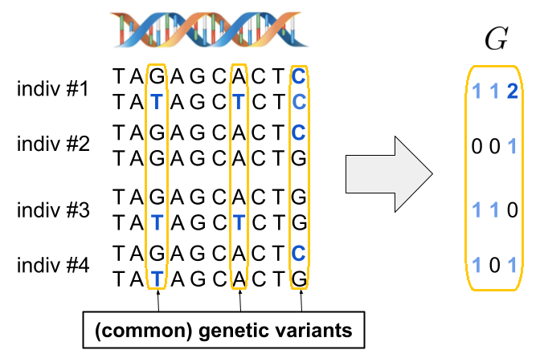

Chapter 2 Inputs and formats
Genetic data is represented as sequences of pairs of alleles (one from both parents). In the following figure, the reference alleles are shown in black, and the alternative alleles—arising from mutations—are shown in blue. Here, three DNA positions show alternative alleles; these are called genetic variants. And we refer to them as common variants because the alternative allele is frequent enough in the population. A particularly common type of genetic variant is the single nucleotide polymorphism (SNP), which involves a substitution of a single base at a specific genomic position. We can encode this data into a numeric genotype matrix G by counting the number of alternative alleles per individual at each variant.

2.1 Imputed data
Genotype imputation is a widely used statistical technique that infers untyped genetic variants (possibly, dozens of millions) by leveraging known haplotype structures from external reference panels (Marchini & Howie, 2010). It increases variant density, improves power for association testing, and facilitates meta-analysis across studies genotyped on different arrays. Imputation is typically performed after genotype quality control and phasing, using reference panels such as the 1000 Genomes Project, the Haplotype Reference Consortium (HRC), or TOPMed, depending on the ancestral composition and genotyping density of the study cohort.
Several online imputation services are available, notably the Michigan Imputation Server (Das et al., 2016) and the Sanger Imputation Service, which provide streamlined pipelines for phasing (e.g., with SHAPEIT or Eagle) and imputation (e.g., using Minimac or IMPUTE). These platforms accept standard VCF inputs, automatically match strand orientation, and return imputed genotypes with associated quality metrics such as the INFO score. It is crucial to select a reference panel that closely matches the ancestry of the study population, as mismatches can reduce imputation accuracy and introduce bias in downstream analyses.
2.2 Formats of genetic data
There exist many different data formats for genetic data:
- bed/bim/fam files (also called PLINK1 files) that respectively store genotype calls only (0, 1, 2, or NA) in a very condensed way (binary using one byte only for 4 genotypes), information on the genetic variants (text), and information on the individuals (text). PLINK 1.9 and 2.0 (Chang et al., 2015) provide many functions to work with this format.
The bed format presented here is not the same as the BED format (a text file format used to store genomic regions as coordinates and associated annotations).
bgen files (usually one per chromosome) that can store imputed probabilities (P(0), P(1), P(2)) that are often transformed to dosage information (expected values: P(1) + 2 P(2)). Each variant is stored compressed, which is very efficient, especially for low-frequency variants. They are accompanied by bgen.bgi files that store information on the genetic variants and the position of their corresponding data in the bgen files, and by a sample file that stores information on the individual IDs. This is the format used for the original UK Biobank imputed data (Bycroft et al., 2018).
pgen/pvar/psam files (also called PLINK2 files) that can store imputed data as well, and pgen files seem more compressed than bgen files. PLINK2 provides many functions to work with this format.
Many other formats that you can usually convert from using PLINK.
2.3 Main motivation for developing R packages bigstatsr and bigsnpr
At the time, there was a notable lack of user-friendly and efficient R packages for genetic analyses, which posed challenges for researchers. The existing workflows often required the use of disparate software tools with inconsistent input formats, reliance on text files for parameter settings, and limited compatibility with exploratory data analysis and familiar R packages. Additionally, the development of new methods was hindered by the absence of tools supporting a simple matrix-like data structure. To address these challenges, I initiated the development of the R package bigsnpr in 2016, reimplementing the statistical methods commonly used in genetic analyses within a cohesive and accessible R framework.
At some point, I realized that many functions (e.g. to perform genome-wide association studies (GWAS), principal component analysis (PCA), summary statistics, etc.) were not specific to genotype data. Indeed, both association studies and PCA are applicable to other omics data, such as transcriptomic or epigenetic datasets. Therefore I decided to move all these functions that could be used on any data stored as a matrix into a new R package, bigstatsr. This is why there are two packages, where bigstatsr can basically be used by any field using data stored as large numeric matrices, while bigsnpr provides some tools more specific to genotype data, largely building on top of bigstatsr. The initial description of the two packages is available in Privé, Aschard, Ziyatdinov, & Blum (2018).
2.4 The bigSNP format from bigsnpr
My R package bigsnpr (Privé et al., 2018) uses a class called bigSNP for representing SNP data. A bigSNP object is merely a list with the three following elements:
$genotypes: AFBM.code256. Rows are samples and columns are genetic variants. This stores genotype calls or dosages (rounded to 2 decimal places). More about this format below.$fam: Adata.framewith some information on the samples.$map: Adata.framewith some information on the genetic variants.
Package bigsnpr also provides functions for directly working on bed files with a small percentage of missing values (Privé, Luu, Blum, McGrath, & Vilhjálmsson, 2020).
2.5 Getting a bigSNP object
To read a bigSNP object from bed/bim/fam files, you can use functions
snp_readBed()andsnp_readBed2()(the second can read a subset of individuals/variants and use parallelism).To read dosages from BGEN files, you can use function
snp_readBGEN(). This function takes around 40 minutes to read 1M variants for 400K individuals using 15 cores. Note that this function currently works only for BGEN v1.2 with probabilities stored as 8 bits (cf. this issue), which is the case for e.g. the UK Biobank files.The previous functions create two new files:
<backingfile>.bk(binary file that stores the content of the genetic matrix) and<backingfile>.rds(stores the R bigSNP object, including some information on how to link with the bk file).To read any format used in genetics, you can always convert blocks of the data to text files using PLINK, read these using
bigreadr::fread2(), and fill part of the resulting FBM. For example, see the code I used to convert the iPSYCH imputed data from the RICOPILI pipeline to my bigSNP format.
Example converting a bed file to bigSNP:
#> Loading required package: bigstatsrBefore using some functions you don’t know, have a look at their documentation to see how to use them and some examples (?snp_readBed).
Use snp_readBed() to transform this data into a bigSNP object.
What do you get? Use snp_attach() to get the data into R and explore it a bit.
Click to see solution
#> [1] "C:\\Users\\au639593\\AppData\\Local\\Temp\\Rtmpc5dgam\\file626c1cf44536.rds"bigsnp <- snp_attach(rds) # can then read in the bigSNP object in any R session
(G <- bigsnp$genotypes)#> A Filebacked Big Matrix of type 'code 256' with 517 rows and 4542 columns.#> [,1] [,2] [,3] [,4] [,5] [,6] [,7] [,8]
#> [1,] 0 0 2 0 1 1 0 2
#> [2,] 1 0 1 0 0 1 0 2
#> [3,] 0 1 1 0 2 1 0 2
#> [4,] 0 0 2 0 2 1 0 2
#> [5,] 1 0 0 0 2 2 1 0#> 'data.frame': 517 obs. of 6 variables:
#> $ family.ID : chr "POP1" "POP1" "POP1" "POP1" ...
#> $ sample.ID : chr "IND0" "IND1" "IND2" "IND3" ...
#> $ paternal.ID: int 0 0 0 0 0 0 0 0 0 0 ...
#> $ maternal.ID: int 0 0 0 0 0 0 0 0 0 0 ...
#> $ sex : int 0 0 0 0 0 0 0 0 0 0 ...
#> $ affection : int 1 1 2 1 1 1 1 1 1 1 ...#> 'data.frame': 4542 obs. of 6 variables:
#> $ chromosome : int 1 1 1 1 1 1 1 1 1 1 ...
#> $ marker.ID : chr "SNP0" "SNP1" "SNP2" "SNP3" ...
#> $ genetic.dist: int 0 0 0 0 0 0 0 0 0 0 ...
#> $ physical.pos: int 112 1098 2089 3107 4091 5091 6107 7103 8090 9074 ...
#> $ allele1 : chr "A" "T" "T" "T" ...
#> $ allele2 : chr "T" "A" "A" "A" ...Example directly mapping the bed file:
Map the bed file directly using bed(). Can you access the same data as with the bigSNP object?
Click to see solution
#> [,1] [,2] [,3] [,4] [,5] [,6] [,7] [,8]
#> [1,] 0 0 2 0 1 1 0 2
#> [2,] 1 0 1 0 0 1 0 2
#> [3,] 0 1 1 0 2 1 0 2
#> [4,] 0 0 2 0 2 1 0 2
#> [5,] 1 0 0 0 2 2 1 0#> 'data.frame': 517 obs. of 6 variables:
#> $ family.ID : chr "POP1" "POP1" "POP1" "POP1" ...
#> $ sample.ID : chr "IND0" "IND1" "IND2" "IND3" ...
#> $ paternal.ID: int 0 0 0 0 0 0 0 0 0 0 ...
#> $ maternal.ID: int 0 0 0 0 0 0 0 0 0 0 ...
#> $ sex : int 0 0 0 0 0 0 0 0 0 0 ...
#> $ affection : int 1 1 2 1 1 1 1 1 1 1 ...#> 'data.frame': 4542 obs. of 6 variables:
#> $ chromosome : int 1 1 1 1 1 1 1 1 1 1 ...
#> $ marker.ID : chr "SNP0" "SNP1" "SNP2" "SNP3" ...
#> $ genetic.dist: int 0 0 0 0 0 0 0 0 0 0 ...
#> $ physical.pos: int 112 1098 2089 3107 4091 5091 6107 7103 8090 9074 ...
#> $ allele1 : chr "A" "T" "T" "T" ...
#> $ allele2 : chr "T" "A" "A" "A" ...Example converting a bgen file to bigSNP:
bgen <- runonce::download_file(
"https://enkre.net/cgi-bin/code/bgen/raw/3ec770a829a753282b5cb45afc3f4eda036b246705b76f9037b6cc98c41a4194?at=example.8bits.bgen",
fname = "example.bgen")
bgi <- runonce::download_file(
"https://enkre.net/cgi-bin/code/bgen/raw/dc7276e0f0e2e096f58d2dac645aa5711de2cd64c3b29a07a80575e175344f78?at=example.8bits.bgen.bgi",
fname = "example.bgen.bgi")First, use snp_readBGI() to get information on the variants.
Then read the first 10 variants using snp_readBGEN() (pay attention to the specific format of list_snp_id), and snp_attach().
What extra information about the variants do you get in the bigSNP object?
Click to see solution
#> # A tibble: 199 × 8
#> chromosome position rsid number_of_alleles allele1 allele2
#> <chr> <int> <chr> <int> <chr> <chr>
#> 1 01 1001 RSID_101 2 A G
#> 2 01 2000 RSID_2 2 A G
#> 3 01 2001 RSID_102 2 A G
#> 4 01 3000 RSID_3 2 A G
#> 5 01 3001 RSID_103 2 A G
#> 6 01 4000 RSID_4 2 A G
#> 7 01 4001 RSID_104 2 A G
#> 8 01 5000 RSID_5 2 A G
#> 9 01 5001 RSID_105 2 A G
#> 10 01 6000 RSID_6 2 A G
#> # ℹ 189 more rows
#> # ℹ 2 more variables: file_start_position <dbl>, size_in_bytes <int>#> [1] "01_1001_A_G" "01_2000_A_G" "01_2001_A_G" "01_3000_A_G" "01_3001_A_G"
#> [6] "01_4000_A_G" "01_4001_A_G" "01_5000_A_G" "01_5001_A_G" "01_6000_A_G"#> [1] "C:\\Users\\au639593\\AppData\\Local\\Temp\\Rtmpc5dgam\\file626c390b316d.rds"#> A Filebacked Big Matrix of type 'code 256' with 500 rows and 10 columns.#> tibble [10 × 8] (S3: tbl_df/tbl/data.frame)
#> $ chromosome : chr [1:10] "01" "01" "01" "01" ...
#> $ marker.ID : chr [1:10] "SNPID_101" "SNPID_2" "SNPID_102" "SNPID_3" ...
#> $ rsid : chr [1:10] "RSID_101" "RSID_2" "RSID_102" "RSID_3" ...
#> $ physical.pos: int [1:10] 1001 2000 2001 3000 3001 4000 4001 5000 5001 6000
#> $ allele1 : chr [1:10] "A" "A" "A" "A" ...
#> $ allele2 : chr [1:10] "G" "G" "G" "G" ...
#> $ freq : num [1:10] 0.583 0.802 0.198 0.483 0.517 ...
#> $ info : num [1:10] 0.975 0.668 0.666 0.952 0.952 ...There is no $fam information when reading BGEN files, which should be read from other data and matched/joined using IDs from the sample file. From the BGEN, you can also use these IDs to read a subset of individuals only, as done in this code.
sample <- runonce::download_file(
"https://enkre.net/cgi-bin/code/bgen/raw/a3c4d8e4c132048a502dc00a3e51362f98eda5a2889df695ba260dc48c327fd9?at=example.sample",
fname = "example.sample")
readLines(sample, n = 6)#> [1] "ID_1" "0" "sample_001" "sample_002" "sample_003"
#> [6] "sample_004"What should you be careful about when reading the sample file?
2.6 The FBM format from bigstatsr
The format provided in R package bigstatsr is called a Filebacked Big Matrix (FBM). It is an on-disk matrix format that is accessed through memory-mapping.

How memory-mapping works:
- when you access the 1st element (1st row, 1st col), it accesses a block (say the first column) from disk into memory (RAM)
- when you access the 2nd element (2nd row, 1st col), it is already in memory so it is accessed very fast
- when you access the second column, you access from disk again (once)
- you can access many columns like that, until you do not have enough memory anymore
- some space is freed automatically so that new columns can be accessed into memory
- everything is seamlessly managed by the operating system (OS)
- it is also very convenient for parallelism as data is shared between processes
All the elements of an FBM have the same type; supported types are:
"double"(the default, double precision – 8 bytes per element)"float"(single precision – 4 bytes)"integer"(signed, so between \(\text{-}2^{31}\) and (\(2^{31} \text{ - } 1\)) – 4 bytes)"unsigned short": can store integer values from \(0\) to \(65535\) (2 bytes)"raw"or"unsigned char": can store integer values from \(0\) to \(255\) (1 byte). It is the basis for class FBM.code256 that can access 256 arbitrary different numeric values (decoded using aCODE_*), which is used in bigsnpr.
The code used in class FBM.code256 for imputed data is e.g.
#> [1] 0.00 1.00 2.00 NA 0.00 1.00 2.00 0.00 0.01 0.02 0.03 0.04 0.05 0.06 0.07
#> [16] 0.08 0.09 0.10 0.11 0.12 0.13 0.14 0.15 0.16 0.17 0.18 0.19 0.20 0.21 0.22
#> [31] 0.23 0.24 0.25 0.26 0.27 0.28 0.29 0.30 0.31 0.32 0.33 0.34 0.35 0.36 0.37
#> [46] 0.38 0.39 0.40 0.41 0.42 0.43 0.44 0.45 0.46 0.47 0.48 0.49 0.50 0.51 0.52
#> [61] 0.53 0.54 0.55 0.56 0.57 0.58 0.59 0.60 0.61 0.62 0.63 0.64 0.65 0.66 0.67
#> [76] 0.68 0.69 0.70 0.71 0.72 0.73 0.74 0.75 0.76 0.77 0.78 0.79 0.80 0.81 0.82
#> [91] 0.83 0.84 0.85 0.86 0.87 0.88 0.89 0.90 0.91 0.92 0.93 0.94 0.95 0.96 0.97
#> [106] 0.98 0.99 1.00 1.01 1.02 1.03 1.04 1.05 1.06 1.07 1.08 1.09 1.10 1.11 1.12
#> [121] 1.13 1.14 1.15 1.16 1.17 1.18 1.19 1.20 1.21 1.22 1.23 1.24 1.25 1.26 1.27
#> [136] 1.28 1.29 1.30 1.31 1.32 1.33 1.34 1.35 1.36 1.37 1.38 1.39 1.40 1.41 1.42
#> [151] 1.43 1.44 1.45 1.46 1.47 1.48 1.49 1.50 1.51 1.52 1.53 1.54 1.55 1.56 1.57
#> [166] 1.58 1.59 1.60 1.61 1.62 1.63 1.64 1.65 1.66 1.67 1.68 1.69 1.70 1.71 1.72
#> [181] 1.73 1.74 1.75 1.76 1.77 1.78 1.79 1.80 1.81 1.82 1.83 1.84 1.85 1.86 1.87
#> [196] 1.88 1.89 1.90 1.91 1.92 1.93 1.94 1.95 1.96 1.97 1.98 1.99 2.00 NA NA
#> [211] NA NA NA NA NA NA NA NA NA NA NA NA NA NA NA
#> [226] NA NA NA NA NA NA NA NA NA NA NA NA NA NA NA
#> [241] NA NA NA NA NA NA NA NA NA NA NA NA NA NA NA
#> [256] NAwhere the first four elements are used to store genotype calls, the next three to store imputed allele counts, and the next 201 values to store dosages rounded to 2 decimal places. This allows for handling many data types (genotype calls and dosages) while storing each element using one byte only (x4 compared to bed files, but /8 compared to double-precision floating-point numbers).
2.7 Working with an FBM
2.7.1 Similar accessor as R matrices
#> [1] "C:\\Users\\au639593\\OneDrive - Aarhus universitet\\Desktop\\statgen-course\\tmp-data\\test.bk"#> [1] "C:\\Users\\au639593\\OneDrive - Aarhus universitet\\Desktop\\statgen-course\\tmp-data\\test.rds"You can access the whole FBM as an R matrix in memory using X[].
However, if the matrix is too large to fit in memory, you should always access only a subset of columns.
Note that the elements of an FBM are stored column-wise (as for a standard R matrix). Therefore, be careful not to access a subset of rows, since it would read non-contiguous elements from the whole matrix from disk.
#> [1] 1 2#> [1] 1 3 5 7 9#> [,1] [,2] [,3] [,4] [,5]
#> [1,] 1 3 5 7 9
#> [2,] 2 4 6 8 102.7.2 Split-(par)Apply-Combine Strategy
#> [1] 3 7 11 15 19Instead, the split-apply-combine strategy works well for applying standard R functions to FBMs (possibly in parallel), as implemented in big_apply().

Learn more with this tutorial on big_apply().
Compute the sum of each column of X <- big_attachExtdata() using big_apply().
2.7.3 Similar accessor as Rcpp matrices
In case you want to develop new R functions for the FBM format while coding in C++ (which is the case for many bigstatsr/bigsnpr functions). Note that it is easy to use only a subset of the data without having to change anything in the code.
// [[Rcpp::plugins(cpp11)]]
// [[Rcpp::depends(bigstatsr, rmio)]]
#include <bigstatsr/BMCodeAcc.h>
// [[Rcpp::export]]
NumericVector bigcolsums(Environment BM,
const IntegerVector& rowInd,
const IntegerVector& colInd) {
// the external pointer
XPtr<FBM> xpBM = BM["address"];
// accessor to a sub-view of the data + automatically decoded
SubBMCode256Acc(xpBM, rowInd, colInd, BM["code256"], 1)
size_t n = macc.nrow(); // similar code as for an Rcpp::NumericMatrix
size_t m = macc.ncol(); // similar code as for an Rcpp::NumericMatrix
NumericVector res(m);
for (size_t j = 0; j < m; j++)
for (size_t i = 0; i < n; i++)
res[j] += macc(i, j); // similar code as for an Rcpp::NumericMatrix
return res;
}2.7.4 Some summary functions are already implemented
#> A Filebacked Big Matrix of type 'code 256' with 517 rows and 4542 columns.#> sum var
#> 1 354 0.4604831
#> 2 213 0.3241195
#> 3 245 0.3932122
#> 4 191 0.3109247
#> 5 472 0.5176030
#> 6 368 0.4613528
#> 7 132 0.2292594
#> 8 497 0.4791207
#> 9 498 0.5160886
#> 10 481 0.5416535
#> [ reached 'max' / getOption("max.print") -- omitted 4532 rows ]#> center scale
#> 1 0.6847195 0.6785891
#> 2 0.4119923 0.5693149
#> 3 0.4738878 0.6270663
#> 4 0.3694391 0.5576062
#> 5 0.9129594 0.7194463
#> 6 0.7117988 0.6792295
#> 7 0.2553191 0.4788104
#> 8 0.9613153 0.6921855
#> 9 0.9632495 0.7183931
#> 10 0.9303675 0.7359712
#> [ reached 'max' / getOption("max.print") -- omitted 4532 rows ]#> center scale
#> 1 0.6847195 0.6710433
#> 2 0.4119923 0.5719471
#> 3 0.4738878 0.6013343
#> 4 0.3694391 0.5488137
#> 5 0.9129594 0.7044231
#> 6 0.7117988 0.6771042
#> 7 0.2553191 0.4719377
#> 8 0.9613153 0.7065775
#> 9 0.9632495 0.7066291
#> 10 0.9303675 0.7053904
#> [ reached 'max' / getOption("max.print") -- omitted 4532 rows ]Functions starting with big_ are part of bigstatsr and work for any type of FBM, while functions starting with snp_ or bed_ are part of bigsnpr and are more specific to genetic data.
There are now many functions implemented in the packages. You can find a comprehensive list of available functions on the package website of bigstatsr and of bigsnpr.
Take some time to have a look at the different functions available in both bigstatsr and bigsnpr.
What is the difference between functions starting with snp_ vs bed_?
To only use a subset of the data stored as an FBM, you should almost never make a copy of the data. Instead, to apply functions to a subset of the data, use their parameters ind.row (or ind.train) and ind.col.
2.8 Exercise
zip <- runonce::download_file(
"https://figshare.com/ndownloader/files/38019072",
dir = "tmp-data", fname = "GWAS_data.zip")
unzip(zip, exdir = "tmp-data", overwrite = FALSE)
bedfile <- "tmp-data/GWAS_data.bed"Map this data with bed() and start exploring it a bit, e.g. what summaries you could compute, what functions you could use.
2.9 Matching genetic variants between datasets
This is some operation we will have to perform several times in this course.
When matching genetic variants across datasets—such as between GWAS summary statistics and a reference panel—it is essential to ensure that alleles are correctly aligned. Two common issues can lead to misalignment:
Strand flips occur when alleles are reported on opposite DNA strands. For example, a SNP recorded as A/G in one dataset may appear as T/C in another. These are complements (A↔︎T, G↔︎C), and although they refer to the same variant, their labels differ due to strand orientation. If strand flips are not corrected, allele matching will fail.
Allele reversals happen when the effect and non-effect (or reference and alternate) alleles are swapped. For instance, if one dataset reports A/G and another G/A, the alleles are technically the same, but the interpretation of the effect direction (e.g., positive or negative beta) will be reversed. This can introduce sign errors in association results or polygenic scores.
These issues are especially problematic for palindromic SNPs such as A/T or C/G, where the alleles are self-complementary. In such cases, even checking for strand flips or reversals is insufficient without additional information, such as allele frequencies, since both datasets may report A/T with no way to determine whether they refer to the same strand or orientation.
Look carefully at the following results from snp_match() to understand what is going on.
sumstats <- data.frame(
chr = 1,
pos = c(86303, 86331, 162463, 752566, 755890, 758144),
a0 = c("T", "G", "C", "A", "T", "G"),
a1 = c("G", "A", "T", "G", "A", "A"),
beta = c(-1.868, 0.250, -0.671, 2.112, 0.239, 1.272),
p = c(0.860, 0.346, 0.900, 0.456, 0.776, 0.383)
)
info_snp <- data.frame(
id = c("rs2949417", "rs115209712", "rs143399298", "rs3094315", "rs3115858"),
chr = 1,
pos = c(86303, 86331, 162463, 752566, 755890),
a0 = c("T", "A", "G", "A", "T"),
a1 = c("G", "G", "A", "G", "A")
)
snp_match(sumstats, info_snp, return_flip_and_rev = TRUE)#> 6 variants to be matched.#> 1 ambiguous SNPs have been removed.#> 4 variants have been matched; 1 were flipped and 1 were reversed.#> chr pos a0 a1 beta p _NUM_ID_.ss _FLIP_ _REV_ id _NUM_ID_
#> 1 1 86303 T G -1.868 0.860 1 FALSE FALSE rs2949417 1
#> 2 1 86331 A G -0.250 0.346 2 FALSE TRUE rs115209712 2
#> 3 1 162463 G A -0.671 0.900 3 TRUE FALSE rs143399298 3
#> 4 1 752566 A G 2.112 0.456 4 FALSE FALSE rs3094315 4#> 6 variants to be matched.#> 4 variants have been matched; 0 were flipped and 1 were reversed.#> chr pos a0 a1 beta p _NUM_ID_.ss id _NUM_ID_
#> 1 1 86303 T G -1.868 0.860 1 rs2949417 1
#> 2 1 86331 A G -0.250 0.346 2 rs115209712 2
#> 3 1 752566 A G 2.112 0.456 4 rs3094315 4
#> 4 1 755890 T A 0.239 0.776 5 rs3115858 5